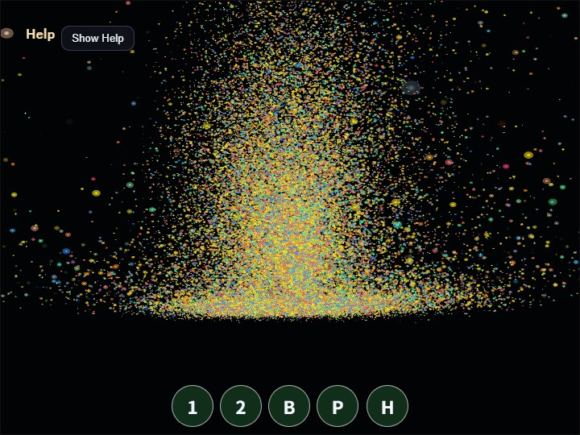

compute_particles
English | 日本語

Overview
- This sample uses WebGPU compute shaders to update and render a large number of particles entirely on the GPU
- It uses the core
GpuParticleEmitterto share particle GPU resources and Compute/Render Pass encoding - Particle position, velocity, lifetime, color, and size are stored in a storage buffer and updated every frame by the compute pass
- The render pass reads the same storage buffer in the vertex shader and draws each particle as an instanced billboard quad made of two triangles
GpuParticleEmitterowns the particle buffer, uniforms, Compute/Render pipelines, and command encoding- Because particle positions are not read back from the GPU to the CPU, the CPU side does not run per-particle movement calculations
- Drag,
Shift + Drag, and the mouse wheel move the orbit camera so the GPU particle group can be inspected from different angles and positions
How to Run
- Open ./compute_particles.html
- Use a browser with WebGPU support, and check the help panel and HUD together with the sample when needed
webg Features Used
WebgApp: initializesScreen, diagnostics, and the input foundation togetherWebgAppcompute frame:computeFrame: trueand theonComputeFramehandler skip standard scene drawing and control compute/render orderGpuParticleEmitter: manages the particle storage buffer, billboard quad, uniforms, Compute/Render pipelines, pass encoding, and resource destructionScreen.resize(): updates the actual canvas pixel size on viewport changes through theScreenheld byWebgAppWebgApp.getGPU(): passes the WebGPU context toGpuParticleEmitterand the sample-specific frame codebuildHelpPanelOptions() + showOverlayPanel(): displays the operation guide and current state in theOverlayPanelhelp panel
WebGPU Features Used
storage buffer: stores the particle array as GPU-readable and GPU-writable datauniform buffer: passesdeltaTime, frame count, screen size, and emitter mode to the shaderorbit camera uniform: passesyaw,pitch,distance,targetY, and pan offset to the render shader so the particle group can be transformed into view spacecompute pipeline: updates position, velocity, and lifetime with one invocation per particlerender pipeline: reads the storage buffer in the vertex shader and draws billboard instancesalpha blending: uses standard alpha compositing so overlapping particles keep visible outlines instead of washing out to white too quicklytimestamp query: measures Compute Pass and Render Pass GPU time and displays per-stage and total load
Checkpoints
- Confirm that 49,152 particles appear in a fountain-like pattern right after startup
- Press
Spaceand confirm that some particles are regenerated and a momentary burst becomes visible - Confirm that
1 / 2switches the emitter mode betweenfountainandring - Confirm that drag performs orbit,
Shift + Dragperforms pan, and the mouse wheel performs zoom - When
Ppauses the sample, confirm that particle updates stop while rendering continues - Press
Hto fold theOverlayPanelhelp panel and confirm thatHagain or theShow Helpbutton restores it - Confirm that
GPU compute / GPU render / GPU total / JS timeand their load values update in the help panel. On systems withouttimestamp-query, GPU timing is shown as unavailable - If you inspect browser devtools, confirm that the CPU is not running a per-particle position-update loop every frame
Controls
Space: burst- Drag: camera orbit
Shift + Drag: camera pan- Mouse wheel: zoom
1: fountain emitter2: ring emitterP: pause / resumeH: hide / show help
Implementation Details
- The compute shader in
main.jsrewrites only the same index in the storage buffer, avoiding write conflicts between particles - Particle spawning, gravity, swirl, floor response, color, and lifetime remain in sample-specific WGSL, so
GpuParticleEmitterdoes not fix one simulation algorithm GpuParticleEmitterdoes not own the command encoder or submission; theWebgAppcompute-frame handler decides the order of Compute, Render, and timestamp queries- The render shader uses instanced billboard quads instead of point lists, so particle size, outlines, and alpha falloff can be controlled in the shader
- Camera control is handled only by the view transform in the render shader, while pan is passed as a post-projection offset through uniforms, preserving a design that never returns particle positions from GPU to CPU
- The operation guide and state display are collected in the standard foldable
OverlayPanelhelp panel instead of a custom DOM HUD - The sample can be used as a compute-shader example for large-scale visual effects and background-effect generation